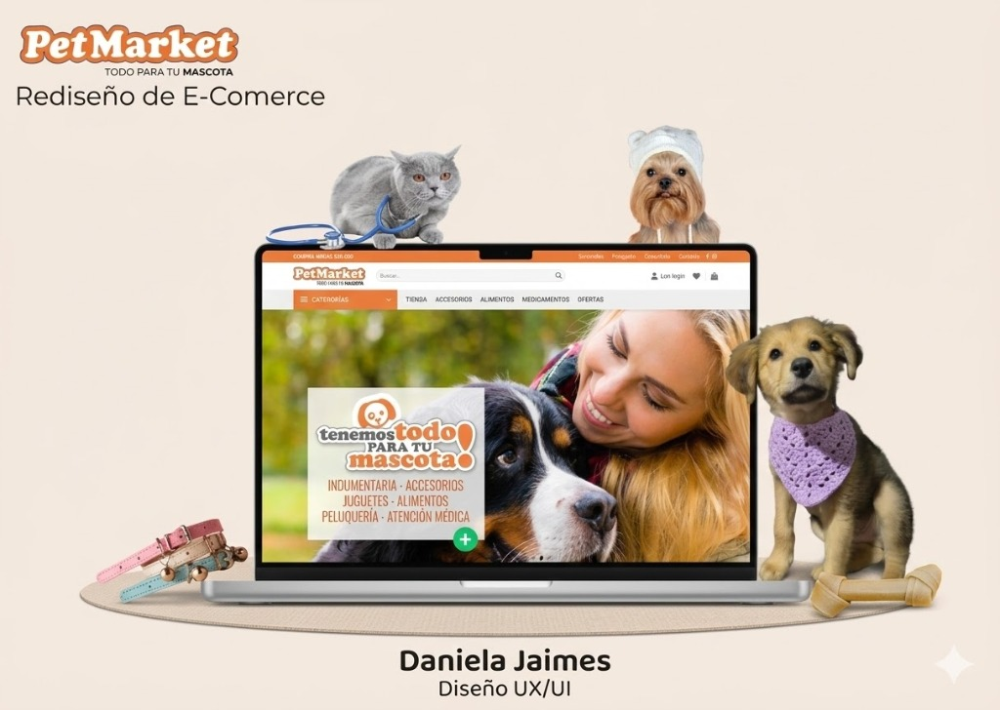

PetMarket
Rediseño
Ecommerce
Rediseño de los flujos de checkout y contacto para reducir la fricción, mejorar la jerarquía visual y aumentar la conversión en la plataforma de PetMarket.
2026
Año
15
Usuarios
8w
Duración
Figma
Herramienta

Rol
UX/UI Designer (solo)
Metodología
Design Thinking
Entregables
Prototipo Hi-Fi · Guía UI
Plataforma
Web · Mobile Web
Entendiendo el problema
Los usuarios abandonaban el proceso de compra antes de finalizarlo. Pero ¿por qué?
Checkout confuso y multi-paso sin orientación
Los usuarios no sabían cuántos pasos faltaban para completar la compra. La ausencia de un indicador de progreso generaba incertidumbre y abandono antes del pago.
Formulario de contacto sin trazabilidad
Al enviar un mensaje de consulta, los usuarios no recibían confirmación, tiempo estimado de respuesta ni ningún tipo de seguimiento dentro del sistema.
Falta de jerarquía visual clara
El diseño original presentaba información sin orden visual claro, dificultando que el usuario identificara las acciones principales (CTAs) y generando carga cognitiva innecesaria.
70%
Tasa de abandono de carrito
Antes del rediseño
15
Usuarios entrevistados
Investigación cualitativa
3
Pasos propuestos en checkout
Solución simplificada
Investigación y hallazgos
Se combinaron métodos cualitativos y cuantitativos para obtener una visión completa del comportamiento del usuario.
Entrevistas en profundidad
Se realizaron 15 entrevistas semiestructuradas con usuarios frecuentes de tiendas de mascotas online (30–45 min cada una).
- check_circleFrustración al no saber el paso en que se encontraban
- check_circleDesconfianza ante la ausencia de confirmación de pago
- check_circleDificultad para filtrar productos por tipo de mascota
Auditoría heurística
Evaluación del sitio existente aplicando las 10 heurísticas de Nielsen para identificar problemas de usabilidad sistémicos.
- check_circleAusencia de feedback del sistema (sin confirmaciones)
- check_circleInconsistencia en botones y etiquetas de acción
- check_circleBaja visibilidad del estado del sistema en checkout
Benchmarking competitivo
Análisis de referentes como PetSmart, Chewy y tiendas locales para identificar mejores prácticas del sector.
- check_circleLos líderes usan checkout de 1 o 3 pasos claros
- check_circleFiltrado por tipo de mascota es estándar en el sector
- check_circleChat en vivo reduce el abandono de consultas
User Persona principal
Martina, 32
Mamá de 2 mascotas · Colombia
"Compro todo online pero me da miedo cuando no sé si mi pago se procesó bien. Si no veo confirmación, cancelo todo."
sentiment_very_dissatisfiedFrustraciones
- ✗No sabe cuántos pasos faltan en el checkout
- ✗No recibe respuesta a sus consultas enviadas
- ✗Le cuesta encontrar productos por tipo de mascota
- ✗La interfaz no es clara en mobile
emoji_objectsNecesidades
- ✓Ver claramente en qué paso está del proceso
- ✓Recibir confirmación inmediata de su compra
- ✓Filtrar productos fácilmente para su mascota
- ✓Saber cuándo recibirá respuesta a su consulta
Definición de la solución
A partir de los hallazgos, se definieron los principios de diseño que guiarían la solución.
HMW #1
¿Cómo podríamos hacer que el usuario siempre sepa en qué punto del proceso se encuentra, sin generar ansiedad?
HMW #2
¿Cómo podríamos dar trazabilidad y confianza al usuario después de enviar una consulta o completar una compra?
Crazy 8's
Generación rápida de ideas para los flujos de checkout y contacto. Se exploraron 8 variantes en 8 minutos.
Wireframes Lo-Fi
Bocetos a mano y wireframes digitales en Figma para validar estructura y flujos antes de invertir en diseño visual.
Prototipo Hi-Fi
Diseño de alta fidelidad con el sistema de diseño de PetMarket, listo para pruebas de usabilidad.
La solución de diseño
Tres intervenciones clave que abordan directamente los puntos de dolor detectados en la investigación.
Checkout simplificado en 3 pasos
Se rediseñó el flujo de pago reduciendo los pasos innecesarios y agregando una barra de progreso visual persistente. El usuario siempre sabe dónde está y cuánto le falta.
- check_circle Paso 1 — Carrito: Resumen claro con edición inline
- check_circle Paso 2 — Envío y pago: Formulario limpio con autocompletado
- check_circle Paso 3 — Confirmación: Pantalla de éxito con número de orden y tiempo de entrega
Indicador de progreso – paso 2 de 3
local_shipping¡Consulta recibida!
Responderemos en menos de 24 hs.
Número de caso: #00123
Sistema de trazabilidad de consultas
Se rediseñó el formulario de contacto para entregar confirmación inmediata, asignar un número de caso y comunicar el tiempo estimado de respuesta.
- check_circle Confirmación automática por email al enviar
- check_circle Número de caso para seguimiento desde el sitio
- check_circle Tiempo estimado de respuesta visible en pantalla
Jerarquía visual y navegación por mascota
Se replanteó la arquitectura de información del catálogo para permitir filtrado por tipo de mascota desde la navegación principal, reduciendo la carga cognitiva.
- check_circle Filtros primarios: Perro · Gato · Ave · Pez · Otros
- check_circle CTAs rediseñados con mayor contraste y especificidad
- check_circle Tipografía y espaciado revisados para mobile-first
Filtro por tipo de mascota
Resultados y aprendizajes
Tras las pruebas de usabilidad con 8 participantes se obtuvieron los siguientes resultados con el prototipo de alta fidelidad.
↓40%
Reducción del tiempo de checkout
Promedio tareas observadas
87%
Tasa de éxito en el checkout
Test de usabilidad Hi-Fi
4.6/5
Satisfacción del usuario
Escala SUS adaptada
100%
Entendió la confirmación
Trazabilidad de consultas
Aprendizajes clave
La visibilidad del sistema es crítica
Mostrar al usuario en qué punto está del proceso no es un detalle cosmético: es una necesidad fundamental que impacta directamente en la confianza y la completitud de la tarea.
Menos pasos ≠ siempre mejor
Reducir pasos sin aclarar qué contiene cada uno puede generar más confusión. La clave es que cada paso tenga un propósito claro y comunicado explícitamente.
El feedback post-acción genera confianza
Una pantalla de confirmación bien diseñada, con número de orden y tiempo estimado, transformó la percepción de seguridad del usuario de manera instantánea.
¿Tienes un proyecto en mente?
Me encantaría escuchar tus desafíos y trabajar juntos para encontrar la mejor solución centrada en el usuario.